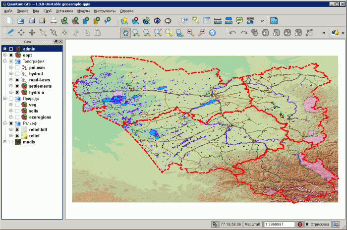

Описание, загрузка, применение.
Обсудить в форуме Комментариев — 108
Оглавление
Геосэмпл - адаптированный к российским условиям набор данных. Данный набор может использоваться для обучения, LiveCD, примерах, тестах ПО ГИС и т.п. Предлагаемый набор данных является лицензионно чистым: создан без использования материалов запрещающих копирование и распространение без специфических соглашений и лицензий, в нем не используются материалы созданные на основе данных Роскартографии и коммерческих компаний. Источники данных и другая информация про компоненты набора приведена в разделе описание слоёв. Загрузка целиком, по ПО приведены в таблицах ссылок для загрузки.
Реализации данного набора доступны для:
В задачи данного набора входит:
В задачи данного набора не входит:
Пожалуйста, сообщайте, если вы использовали этот набор данных в своей работе и о своих идеях как сделать этот набор лучше.

Замечания по данным независимо от программного обеспечения.
Данные представлены четырьмя субъектами Российской Федерации: Кемеровской, Новосибирской областями, Алтайским краем и Республикой Алтай.
Описание данных в формате HTML для распечатки и ознакомления также присутствует в файле комплекта данных.
Название слоя: admin
Поля: NAME - название субъекта
Тип слоя: полигональный. Условные обозначения
Источник: Vmap0
Рестораны, автозаправки и т.п.
Название слоя: poi-osm
Поля: CATEGORY - категория, NAME - полное название, TYPE - тип (часть имени) (источник классов).
Тип слоя: векторный, точечный. Условные обозначения
Источник: OpenStreetMap
Название слоя: road-l-osm
Поля: NAME - название (если имеется), TYPE - тип (англ), TYPERUS - тип (рус) (источник классов)
Тип слоя: векторный, линейный. Условные обозначения
Источник: OpenStreetMap
Название слоёв: railroad-l
Поля: STATUS - статус, LANES - количество путей.
Тип слоя: векторный, линейный. Условные обозначения
Источник: Vmap0
Название слоёв: hydro-poly, hydro-line
Поля: NAME - название (если имеется), TYPE - тип (источник классов).
Тип слоёв: векторный, полигональный и линейный. Условные обозначения
Источник: Vmap0
Название слоя: settlements
Поля: Type - тип наспункта, Subject - название субъекта, Rayon - название района, Name - название наспункта (используется для подписей начиная с масштаба: 1:500'000), Code - код КЛАДР, Index - почтовый индекс, Ocatd - код ОКАТО, Lat - широта центра, Long - долгота центра.
Тип слоя: векторный, полигональный. Условные обозначения
Источники: Vmap0, GIS-Lab.info
Данные о высоте местности в виде собственно данных разбитых по диапазонам и теневой отмывки рельефа. Разрешение 1 км.
Название слоёв: relief-color, relief-hillshade
Тип слоёв: растровый. Условные обозначения
Источник: SRTM30
Фрагмент мозаики на месяц май. Разрешение 500 метров.
Тип слоя: растровый. Условные обозначения
Источники: Blue Marble
Заповедники, национальные парки, заказники федерального значения.
Название слоя: oopt
Поля: NAME_R - название, TYPE - тип, NAME_PRT_R - название участка если их несколько.
Тип слоя: векторный. Условные обозначения
Источники: ЦОДП/МСоЭС/WRI
Название слоя: soils
Поля: FAOSOIL - код типов почв (расшифровка), UNIT - класс, TYPE - тип, NAME - название (источник классов).
Тип слоя: векторный. Условные обозначения
Источники: FAO-UNESCO Soil Map of the World, 1974
Название слоя: veg
Поля: TYPE - тип, SUBTYPE - подтип
Тип слоя: векторный. Условные обозначения
Источник: Карта растительности СССР (для высших учебных заведений) 1:4 000 000; 1990; М.
Границы экорегионов
Название слоя: ecoregions
Поля: Weblink - ссылка на описание (англ.), Name - название субъекта, Eco_name_r - название экорегиона.
Тип слоя: векторный. Условные обозначения
Источник: Olson, D. M, E. Dinerstein, E.D. Wikramanayake, N.D. Burgess, G.V.N. Powell, E.C. Underwood, J.A. D'amico, I. Itoua, H.E. Strand, J.C. Morrison, C.J. Loucks, T.F. Allnutt, T.H. Ricketts, Y. Kura, J.F. Lamoreux, W.W.Wettengel, P. Hedao, & K.R. Kassem. 2001. Terrestrial Ecoregions of the World: A New Map of Life on Earth. BioScience 51:933-938 (ссылка)
shape - векторные слои в shape-формате, используются QGIS, gvSIG, Arcview GIS, ArcGIS
tab - векторные слои в формате TAB, используются Mapinfo
sql - данные в формате SQLite/SpatiaLite
grass - данные в формате GRASS
lyr/mxd - файлы условных обозначений и проект для ArcGIS;
avl/apr - файлы условных обозначений и проект для Arcview GIS;
qml/qgs - файлы условных обозначений и проект для QGIS;
gvl/qvp - файлы условных обозначений и проект для gvSIG;
geosample-udig.umap - проект для uDig;
wor - проект для Mapinfo;
readme.html - описание набора данных (копия этой страницы).
Геосэмпл можно загрузить целиком, для конкретного ПО или послойно.
Внимание: проекты будут полностью функциональны только в случае загрузки комплекта целиком или набора целиков для конкретного ПО.
| Название | Название файла | Размер, Mb | Ссылка |
|---|---|---|---|
| Набор целиком | geosample | 41.8 | скачать |
Набор целиком по ПО (влючает данные, проектные файлы, файлы легенд, если они есть). Ссылка на имени ГИС ведет на официальную страницу. Ссылка на названии файла - на снимок экрана этой ГИС:
| Название | Название файла | Версия ПО | Размер, Mb | Ссылка | Демо |
|---|---|---|---|---|---|
| ArcGIS | geosample-arcgis | 9.2+ | 5.4 | скачать | |
| Arcview 3 | geosample-arcview | 3.2 | 5.2 | скачать | |
| GRASS | geosample-grass | 19.3 | скачать | ||
| GeoServer | geosample-geoserver | 1.7.6 | 5.7 | скачать | посмотреть |
| gvSIG | geosample-gvsig | 1.1.2 | 5.2 | скачать | |
| Mapinfo | geosample-mapinfo | 7.5 | 4.8 | скачать | |
| MapWindow | geosample-mapwindow | ||||
| OpenJUMP | geosample-openjump | 1.3 | 5.1 | скачать | |
| OpenLayers | geosample-openlayers | 0.2 | скачать | посмотреть | |
| QGIS | geosample-qgis | 1.4 | 5.2 | скачать | |
| Saga | geosample-saga | 2.0.3 | 13.9 | скачать | |
| SQLite/SpatiaLite | geosample-sqlite | 2.2 | скачать | ||
| SpatiaLite GIS | geosample-spatialite-gis | 1.0 | 2.4 | скачать | |
| uDIG | geosample-udig | 1.1.1 | 5.2 | скачать |
Данные послойно (в различных форматах):
| Название | Название файла | Размер, Mb | Ссылка |
|---|---|---|---|
| Административные границы | admin | 0.1 | скачать |
| Населенные пункты | settlements | 0.1 | скачать |
| Гидросеть линейная | hydro-l | 0.5 | скачать |
| Гидросеть полигональная | hydro-a | 0.3 | скачать |
| Объекты (POI) | poi-osm | 0.2 | скачать |
| Дорожная сеть | road-l-osm | 1.4 | скачать |
| Железные дороги | railroad-l | 0.1 | скачать |
| Охраняемые природные территории | oopt | 0.1 | скачать |
| Растительность | veg | 1.0 | скачать |
| Почвы | soil | 0.2 | скачать |
| Экорегионы | ecoregions | 0.1 | скачать |
| Рельеф | relief | 7.6 | скачать |
| MODIS | modis | 8.5 | скачать |
Варианты запуска:
В версиях 1.1 и ниже возможна потеря слоёв из-за непонимания относительных ссылок.
Кодировка атрибутивных данных UTF-8.
При использование самих данных: распаковать в любую папку, при запуске GRASS указать:
Запуск проекта: geosample-gvsig-linux.gvp или geosample-gvsig-win.gvp.
Не поддерживает относительные ссылки, классифицированные растры, прозрачность векторных слоёв. Для правильного отображения слоёв необходим установленный русификатор. Данные архива для Windows версии должны быть распакованы в c:\geosample, для Linux - /usr/share/geosample. Необходимо установить права на папку geosample: chmod 755 *.
Запуск проекта: указываем каталог udig-project.udig (linux), папку geosample (windows).
Не поддерживает относительные ссылки, группы слоёв, прозрачность. В версии под linux не удалось раскрасить слои, так как udig не определил поля шейп файлов. Данные архива для Windows версии должны быть распакованы в c:/geosample, для Linux - /usr/share/geosample.
Запуск проекта: geosample-arcview.apr. Только Windows.
Не поддерживает группы слоёв, прозрачность, классификацию растров GeoTIFF. Использует растры рельефа в формате Arcinfo GRID. Для отображения данных о рельефе необходим установленный модуль Spatial Analyst.
Запуск проекта: geosample-arcgis.mxd. Только Windows.
Запуск проекта: c:\geosample\geosample-openjump.jmp или /usr/share/geosample/geosample-openjump-linux.jmp
Не поддерживает относительные ссылки, классифицированные растры.
Запуск проекта: geosample-saga.sprj. Только Windows.
Помимо собственного набора для скачивания, данный набор данных доступен по:
Запуск проекта: openlayers\geosample-ol.html. Требуется подключение к интернету.
Работа только с векторными данными, отсутствуют группы слоёв. Для использования: распаковать в любую папку, запустить SpatiaLite GIS и открыть ранее распакованную базу (подключиться к ней).
Обсудить в форуме Комментариев — 108
Последнее обновление: October 07 2009
Работа со стилями в GeoServer/GeoExt Styler
Конвертирование полигональных shape-файлов в покрытия Arcinfo с исправлением ошибок топологии
Организационные и правовые аспекты создания и подготовки карт к открытому опубликованию в цифровой (в т.ч. в Интернет) и печатной форме
Сборка QGIS используя Visual C++ Express Edition 2008 и компоненты OSGeo4W
Использование метрики Левенштейна для поиска аналогов названий
© GIS-Lab и авторы, 2002-2009. При использовании материалов сайта, ссылка на GIS-Lab и авторов обязательна.
{kind=link}
{kind=link}
{kind=link}
{kind=link}
{kind=link}
{kind=link}
{kind=link}
{kind=link}
{kind=link}
{kind=link}
{kind=link}
{kind=link}
{kind=link}
{kind=link}
{kind=link}
{kind=link}
{kind=link}
{kind=link}
{kind=link}
{kind=link}
{kind=link}
{kind=link}
{kind=link}